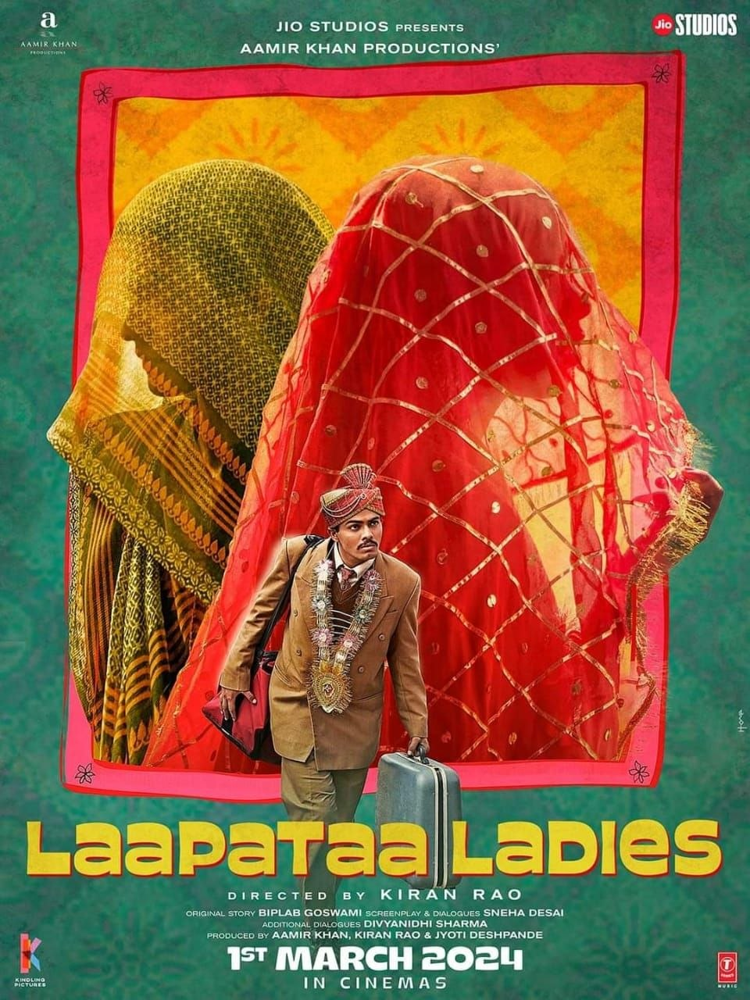

Director: കിരൺ റാവൂ
Review by: ഷിജിൽ എം പി
ഒരു സിനിമയെ പരിചയപ്പെടുത്തുന്നു:
Laapataa Ladies (2023)
ആമിർ ഖാൻ പ്രൊഡക്ഷന്റെ ബാനറിൽ കിരൺ റാവൂ സംവിധാനം ചെയ്ത് 2023-യിൽ പുറത്തിറങ്ങിയ ചിത്രമാണ് ലാപതാ ലേഡീസ്.
2001-യിലെ വടക്കേ ഇന്ത്യയും അവിടെ നിലനിന്നിരുന്ന വിവാഹാനന്തര ആചാരങ്ങളും സ്ത്രീകളുടെ അവകാശ നിഷേധങ്ങളുമെല്ലാം വളരെ രസകരമായി പറഞ്ഞു പോകുന്ന ചിത്രമാണ് ലാപതാ ലേഡീസ്. വിവാഹ ശേഷം സ്വന്തം വീടുകളിലേക്ക് വധുവുമായി ട്രെയിനിൽ പോകുന്ന രണ്ടുപേർക്ക് ഭാര്യമാർ ഇട്ടിരുന്ന മൂടുപടം കാരണം അവരെ തമ്മിൽ മാറിപോകുന്നതും തുടർന്ന് ആ പെൺകുട്ടികളുടെ ജീവിതവും അവര് കണ്ടുമുട്ടുന്ന വ്യക്തികളുടെ കഥകളും അന്നത്തെ ഇന്ത്യയുടെ രാഷ്ട്രീയ പശ്ചാത്തലത്തിൽ നിന്നുകൊണ്ട് വളരെ മികച്ച രീതിയിൽ ചിത്രം സംസാരിക്കുന്നുണ്ട്. സ്ത്രീകളും അവരുടെ അവകാശ നിഷേധനങ്ങളുമെല്ലാം യാതൊരു വിധ ഏച്ചുക്കെട്ടലും ഇല്ലാതെ അവതരിപ്പിച്ച തിരക്കഥയാണ് ചിത്രത്തിന്റെ ഏറ്റവും വലിയ വിജയം. തിരക്കഥയുടെ കെട്ടുറപ്പ് ഈ അടുത്തിറങ്ങിയ ഏറ്റവും മികച്ച രാഷ്ട്രീയ ആക്ഷേപ ഹാസ്യ ചിത്രങ്ങളുടെ കൂട്ടത്തിൽ ലാപതാ ലേഡീസിനെ മുൻനിരയിൽ എത്തിക്കുന്നു.
തീയറ്ററിൽ റിലീസ് ചെയ്ത സമയത്ത് വലിയ സ്വീകാര്യത കിട്ടാത്ത സിനിമ OTT Netflix ൽ വന്നപ്പോൾ വലിയ രീതിയിൽ ചർച്ച ചെയ്യപ്പെട്ടു. നമ്മൾ എല്ലാവരും എങ്ങനെ സമയം കണ്ടെത്തിയിട്ടാണെങ്കിലും കണ്ടിരിക്കേണ്ട സിനിമ എന്നല്ലാതെ കൂടുതൽ പറയാൻ വാക്കുകളില്ല.
മനസ് നിറച്ച മനോഹര സിനിമ ❤️